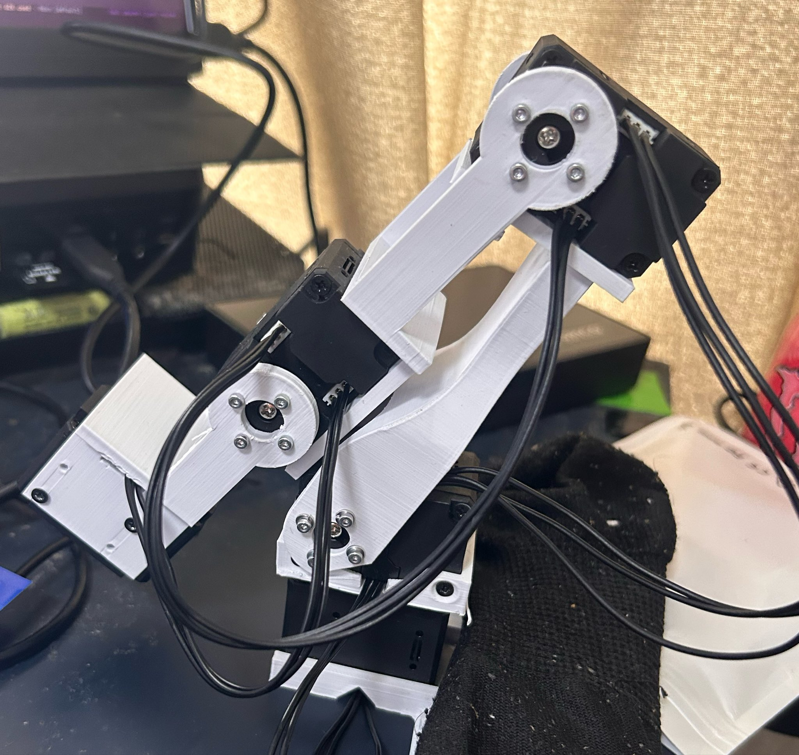
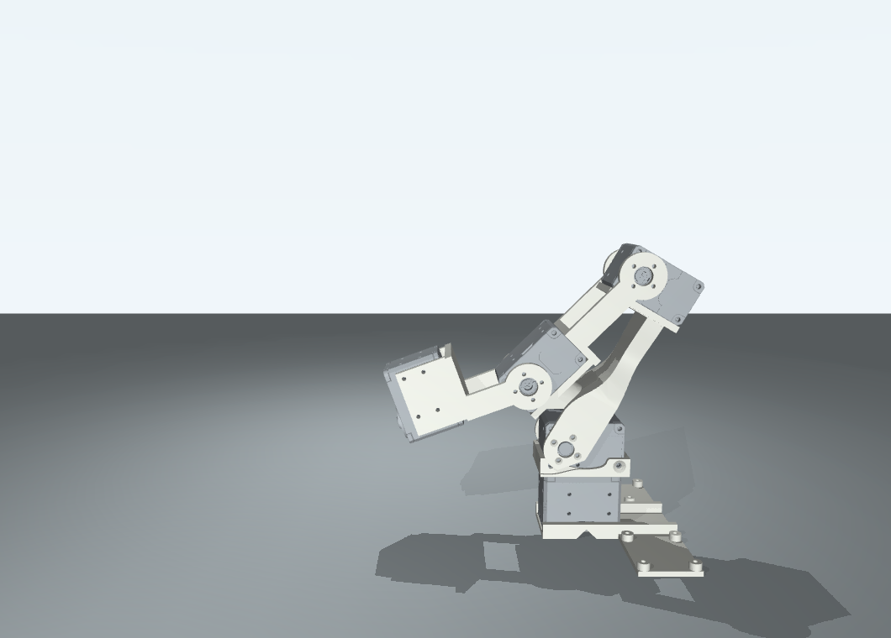
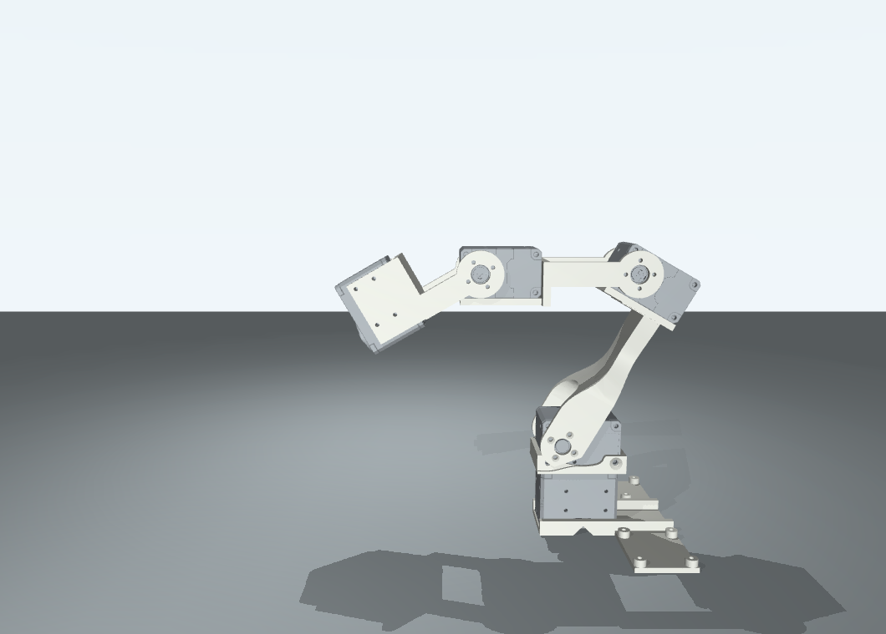
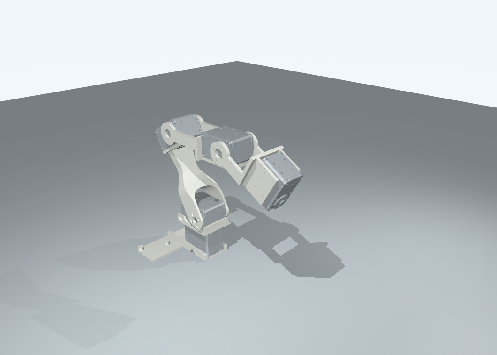

現状写真：電源OFFの基準

裸アームに見えます。C7爪・D405ホルダーは見えていません。クッションへの荷重経路は写真だけでは確定できません。
写真の形に近づけたCAD例

q=[0,−30,−75,+25]°。2D写真からの仮定で、現在角の復元ではありません。方向・ゼロ点・姿勢は未校正です。
スタンバイ候補：側面

q=[0,−30,−30,−30]°。前腕を世界前へ水平に、ID5支持軸を30°下向き。肩−30°は例で、実機では校正済みの現在肩角を維持します。
スタンバイ候補：斜め

standbyは通電待機用。ここからそのまま電源OFFへは切り替えません。実機target countsは未設定です。